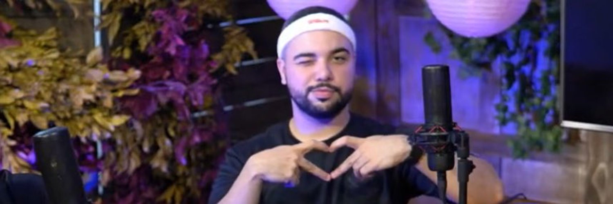
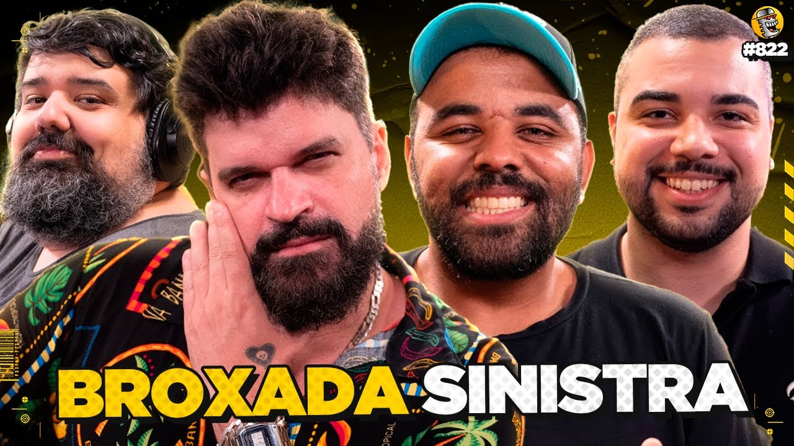
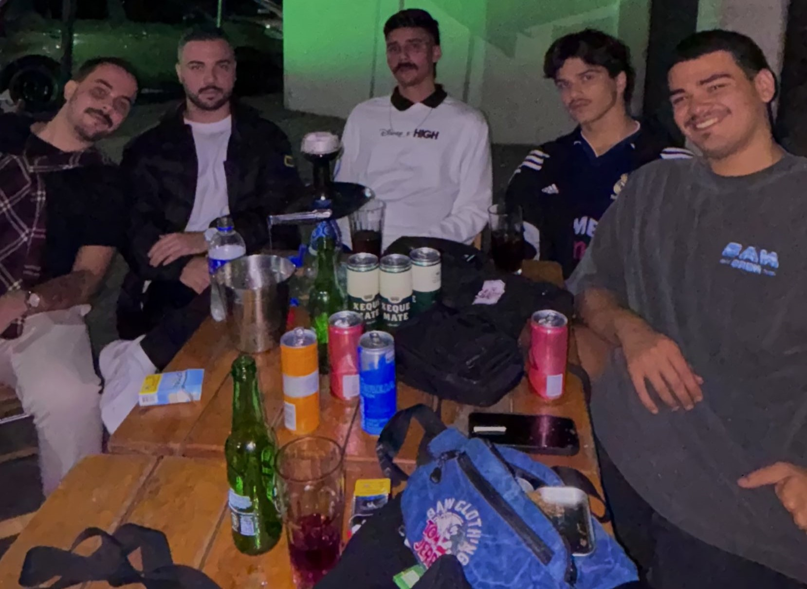

A Historia de Gabriel Nargas, o Pastor do Broxada Sinistra
Se você é fã de contepudos merdas, provavelmente já ouviu falar do Broxada Sinistra. Mas talvez não conheça a fundo um de seus integrantes: Gabriel Nargas, também conhecido como "Pastor". Neste artigo, vamos explorar a trajetória dele e suas contribuições para o Broxada Sinistra.
O Inicio de Tudo
Gabriel Nargas começou sua jornada no mundo de Cosmos - RJ, Onde comia pão com amianto para sobreviver, até Joey Ponzi, ex participante do Broxada Sinistra, brigar com Ronaldinho e rachar suas relações com Rodrigo Magal. Liberarando uma vaguinha na mesa comicamente grande do Broxada Sinistra, muito bem ocupada pelo Pastor Marcio Junior em seu primeiro episódio: CALMA CALABRESO COM PASTOR MÁRCIO - #120

Bordoes e Estilo Unico
Desde então, Nargas é conhecido por suas piadas envolvendo papagaios, gênios e brasileiros, alemães e argentinos. Seus bordões, como "Chefe, meu pobrema é outro!", "Reginaldo, hora do lanche!" se tornaram marcas registradas e são frequentemente citados pelos fãs. Além disso, podemos relembrar de outros momentos históricos como quando ele ficou de fora do evento da disney e postou comendo apenas um prato de arroz e batata palha com um sorriso no rosto e em outro momento quando disparou a frase: "Tem dias que até cair de bicicleta é janta".
O Broxada Sinistra & EGN
Broxada Sinistra - Atualmente o maior podcast do Brasil, comandado pelo maior showrunner do Brasil Magalzão Show, acompanhado de seu grande amigo Totoro, mestre das esquetes do Porta dos Fundos e Lil Vinicin, maior twitteiro da história e faz a dupla dos sonhos com Nargas. Você pode conferir o MELHOR EPISÓDIO aqui:
EGN - Mais conhecida como Equipe Gabriel Nargas é composta por: Gabriel Nargas, Central do Nargas, Sorriso, SK e Bigode. Comandam as redes sociais e fazem os cortes para as páginas do Gabriel Nargas, Ao entrar na equipe assinaram um contrato onde só permitiam eles andarem com uma camisa G e devem fazer perguntas o tempo todo, sempre começando com um "#EGN Quer Saber:"". como: "#EGN Quer Saber: Cano já é maior que Pelé para o futebol brasileiro?" e "#EGN Quer Saber: já bebeu água para esconder a fome?"
Espero que você tenha gostado de conhecer mais sobre Gabriel Nargas e Broxada Sinistra. Fique ligado para mais curiosidades!